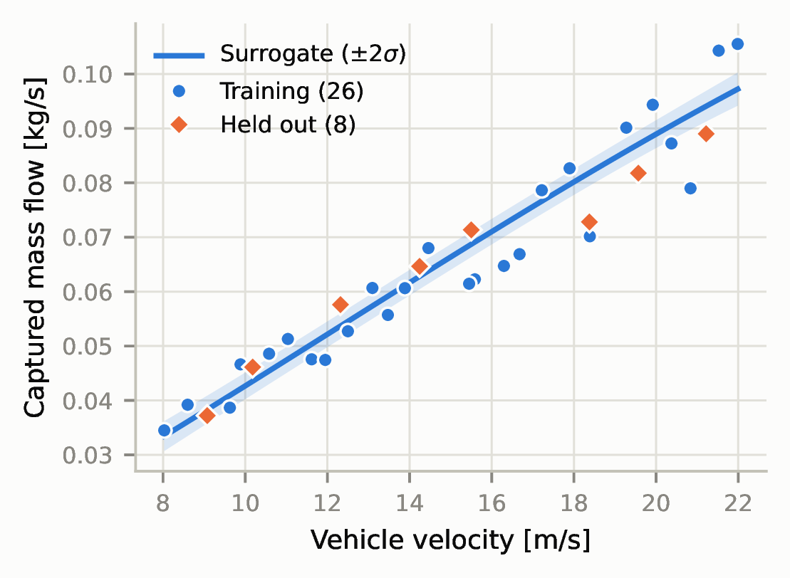
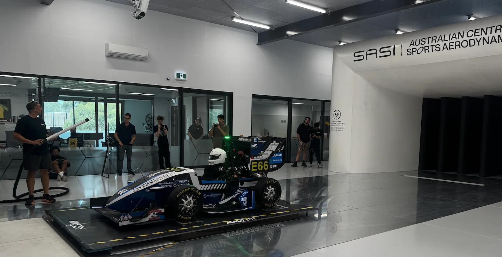
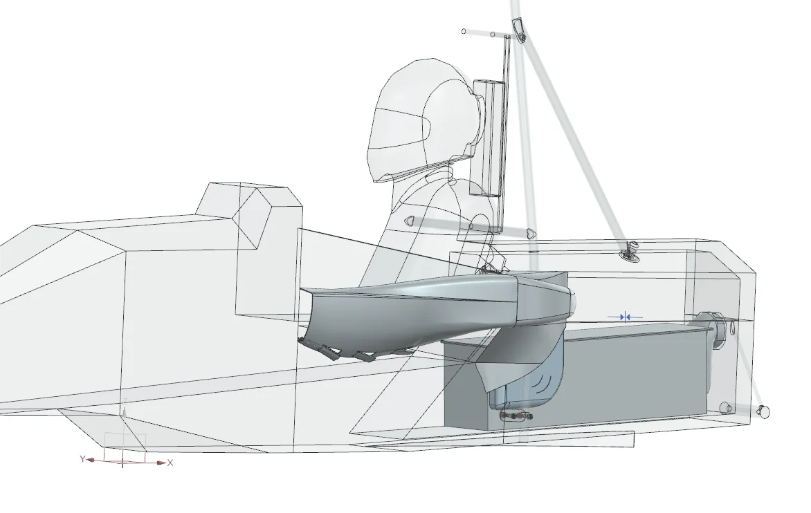

Projects
Aerodynamics, cooling and CFD workflow development at Monash Motorsport.
Write-Ups

Surrogate Thermal Model: Gaussian Process and Transient Network
A Gaussian process trained on 34 full-car CFD cases predicts cooling mass flow from vehicle attitude; a 120-cell transient network turns it into cell temperatures. Held-out R² of 0.9932, fourth-order integration verified, tested and documented.

Building Cooling Into the CFD Workflow
Fan boundary conditions, thermal simulation and accumulator ducting added to a workflow that had none, then carried into PyFluent on HPC with automated post-processing.

Australian Centre for Sports Aerodynamics: CFD Validation
A week in Adelaide with two cars, validating our CFD and turbulence modelling against wind tunnel data.

Accumulator Cooling: Ducting Design and CFD
External sidepod ducting and an internal flow path for the M26 pack. 0.768 CLA recovered across the design iteration, balance on 50.0%, and accumulator mass flow raised from 0.008 to 0.021 kg/s.
Tools
Software & Data
Python · NumPy · scikit-learn · Matplotlib · pytest · pdoc · Git · SLURM
CFD & Simulation
Ansys Fluent 25R1 · PyFluent scripting · SLURM / HPC batch workflows · mesh generation and convergence · boundary condition derivation · MATLAB post-processing
Thermal
Conjugate heat transfer setup · duct and internal flow · fan curve and system curve matching · CFD-to-rig-test validation
Design & CAD
Siemens NX · SolidWorks · Fusion 360 · parametric modelling that carries over to CATIA · duct and packaging geometry · cooling system integration into vehicle architecture